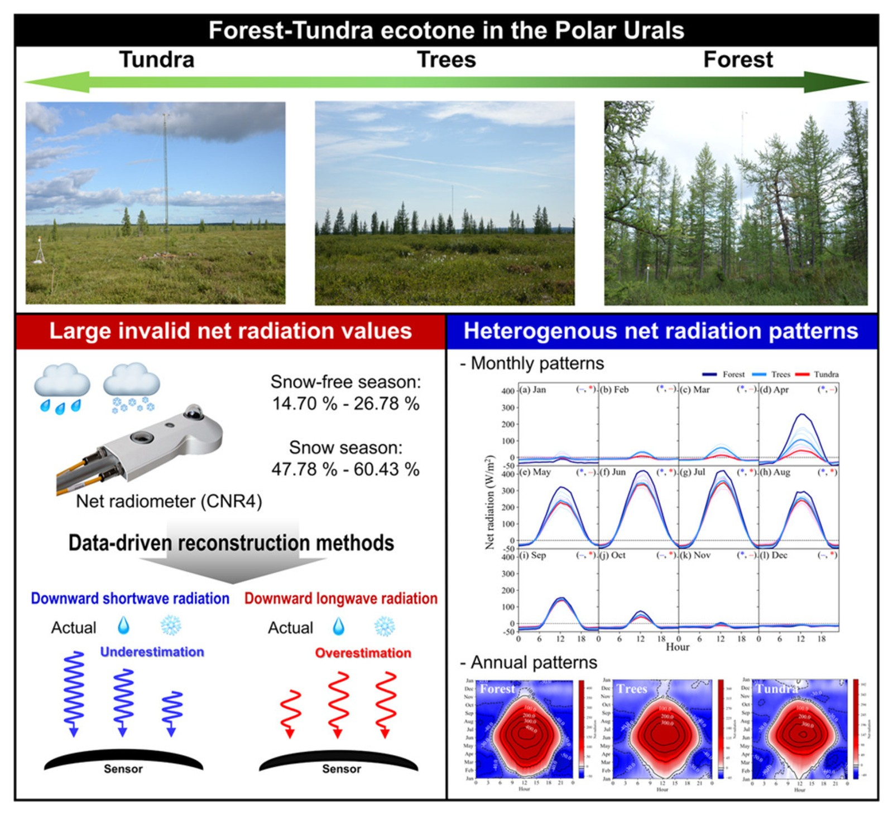
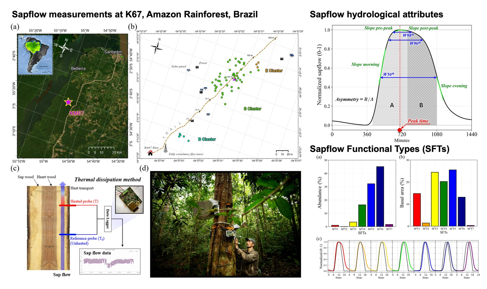
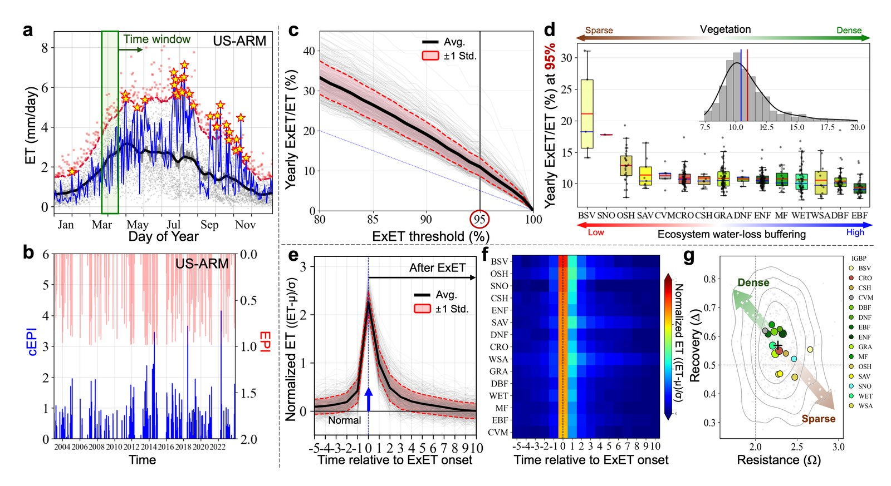

Arctic: Arctic Greening and Energy Partitioning
Forest–tundra ecotone, Ural Mountains · Sep. 2022 – present

Radiation measurements in high latitudes are quietly corrupted by precipitation: water and snow on the sensor dome bias the recorded flux. I developed a correction framework for these precipitation-induced biases across the Arctic forest–tundra ecotone, then used the corrected record to analyse how net radiation is partitioned between forest and tundra.
The corrected picture shows how Arctic greening shifts that partitioning and can amplify warming through land–atmosphere feedbacks — a signal the uncorrected observations understate.
Published in Agricultural and Forest Meteorology (2025), 374, 110814; presented at AGU 2023.
Amazon: Sapflow Functional Types
Santarém, K67, Brazil · Aug. 2023, May & Aug. 2024, Aug. 2025

Trees do not all drink the same way. Working from sapflow measurements in the Amazon rainforest, I categorised diurnal sapflow patterns as sapflow functional types and built a tree-trait-based framework for upscaling water-use strategies into Earth system models.
The framework turns a tree-by-tree measurement into something a land surface model can carry: a small set of behaviours tied to traits that are already observable at scale.
In review at New Phytologist (equal contribution); presented at AGU 2024.
Amazon: Sapflow ML/AI with Causal Interpretation
Santarém, K67, Brazil
Prediction alone does not explain. Alongside the functional-type work I built a predictive framework for sapflow that carries a causal interpretation, so the model reports not only what a tree will do but which driver moved it.
With it I quantify how drought and forest structure shape tree water use across timescales — from the diurnal response to the seasonal drawdown — and separate the environmental forcing from the structural context in which a tree sits.
Presented at AGU 2025.
EcoLPT: Lagrangian Parcel Tracking Tool for Ecohydrology
Oak Ridge National Laboratory, Water Systems Modeling Group · Aug. 2023, Jun.–Jul. 2024, Jan. 2026 – present
Eulerian models tell you the state of water at a place. They do not tell you where that water came from or how long it has been there. EcoLPT reconstructs water history across a landscape: it follows water from precipitation through coupled surface and subsurface pathways to evapotranspiration or watershed export, quantifying origin, trajectory, residence time and path length.
Using field observations from the Amazon, I built a physics-based watershed simulation to resolve Eulerian states and fluxes, then applied EcoLPT to reconstruct the corresponding Lagrangian histories. The combined view exposes water connectivity, transport pathways, storage selection and hydrologic memory that states and fluxes alone cannot show.
Manuscript in preparation for Geoscientific Model Development.
ExET: Extreme Evapotranspiration
Global flux-tower network

I introduced extreme evapotranspiration as an ecohydrological shock and built an event-based framework to quantify its frequency, duration, intensity and severity. Across a global flux-tower dataset, ExET occurs on roughly 5% of days yet accounts for some 10–15% of annual evapotranspiration — a small share of the calendar carrying a large share of the water loss.
Using the same framework I quantified ecosystem stability and resilience across vegetation and hydroclimatic gradients, finding stronger regulation and faster recovery in forests but greater vulnerability to rising vapour pressure deficit in arid ecosystems. An observation- and satellite-based extension scales the analysis from individual sites to regions, maps ecosystem vulnerability, and forecasts emerging hotspots — enabling earlier detection of rapid ecosystem water loss and developing flash drought.
Integrated Ecohydrological Model
Amazon rainforest · ATS, tRIBS+VEGGIE
The observational and methodological work meets here. I develop integrated ecohydrological models — the Advanced Terrestrial Simulator and tRIBS+VEGGIE — for Amazon watersheds, resolving coupled surface, subsurface and vegetation processes against the field record collected at the same sites.
Because these simulations are expensive, I also build AI surrogate models that reproduce their behaviour at a fraction of the cost, making ensemble experiments and uncertainty quantification tractable.